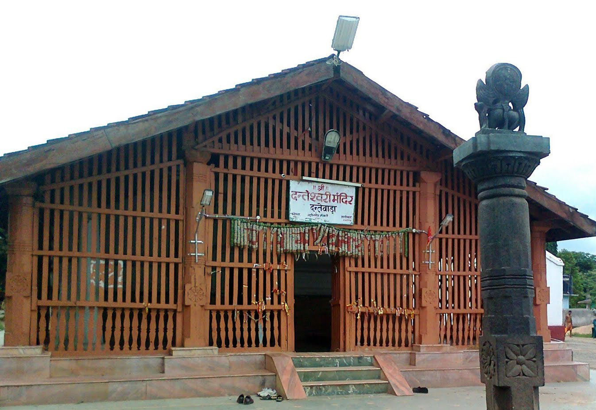
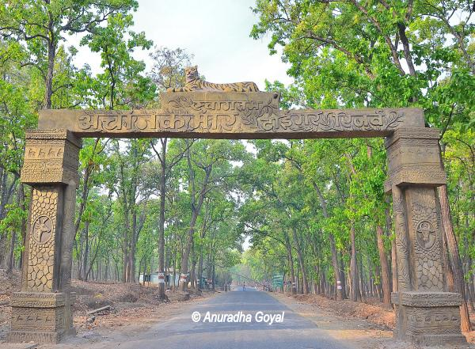

|
Chhattisgarh Tourism |
 |
 |
|
1 / 3

Chitrakot Falls
2 / 3

Danteswari dantewada
3 / 3

Achanakmar
|
Chhatisgarh MAP Click hear to zoom this image |
{kind=link}
| HISTORY | Government of Chhattisgarh |
|---|---|
|
Ancient and medieval history In ancient times, this region was known as Dakshina Kosala. This area also finds mention in Ramayana and Mahabharata. One of the earliest statues of Vishnu has been excavated from Shunga period site at Malhar. Between the sixth and twelfth centuries, Sharabhpurias, Panduvanshis (of Mekala and Dakshina Kosala), Somavanshi, Kalachuri and Nagavanshi rulers dominated this region. The Bastar region of Chhattisgarh was invaded by Rajendra Chola I and Kulothunga Chola I of the Chola dynasty in the 11th century. Colonial and post-independence history Chhattisgarh was under Maratha rule (Bhonsales of Nagpur) from 1741 to 1845 AD. It came under British rule from 1845 to 1947 as the Chhattisgarh Division of the Central Provinces. Raipur gained prominence over the capital Ratanpur with the advent of the British in 1845. In 1905, the Sambalpur district was transferred to Odisha and the estates of Surguja were transferred from Bengal to Chhattisgarh. The area constituting the new state merged into Madhya Pradesh on 1 November 1956, under the States Reorganisation Act, 1956 and remained a part of that state for 44 years. Prior to it's becoming a part of the new state of Madhya Pradesh, the region was part of old Madhya Pradesh State, with its capital at Bhopal. Prior to that, the region was part of the Central Provinces and Berar (CP and Berar) under British rule. Some areas constituting the Chhattisgarh state were princely states under the British rule, but later on were merged into Madhya Pradesh. Separation of Chhattisgarh The present state of Chhattisgarh was carved out of Madhya Pradesh on 1 November 2000.[7][8] The demand for a separate state was first raised in the 1920s. Similar demands kept cropping up at regular intervals; however, a well-organised movement was never launched. Several all-party platforms were formed and they usually resolved around petitions, public meetings, seminars, rallies and strikes.[30] A demand for separate Chhattisgarh was raised in 1924 by the Raipur Congress unit and also discussed in the Annual Session of the Indian Congress at Tripuri. A discussion also took place of forming a Regional Congress organisation for Chhattisgarh. When the State Reorganisation Commission was set up in 1954, the demand for a separate Chhattisgarh was put forward, but was not accepted. In 1955, a demand for a separate state was raised in the Nagpur assembly of the then state of Madhya Bharat. The 1990s saw more activity for a demand for the new state, such as the formation of a statewide political forum, especially the Chhattisgarh Rajya Nirman Manch. Chandulal Chadrakar led this forum, several successful region-wide strikes and rallies were organised under the banner of the forum, all of which were supported by major political parties, including the Indian National Congress and the Bharatiya Janata Party.[30] The new National Democratic Alliance (NDA) government sent the redrafted Separate Chhattisgarh Bill for the approval of the Madhya Pradesh Assembly, where it was once again unanimously approved and then it was tabled in the Lok Sabha. This bill for a separate Chhattisgarh was passed in the Lok Sabha and the Rajya Sabha, paving the way for the creation of a separate state of Chhattisgarh. The President of India gave his consent to the Madhya Pradesh Reorganisation Act 2000 on 25 August 2000. The Government of India subsequently set 1 November 2000, as the day the state of Madhya Pradesh would be divided into Chhattisgarh and Madhya Pradesh.[30] |
The Government of Chhattisgarh also known as the State Government of Chhattisgarh, or locally as State Government, is the supreme governing authority of the Indian state of Chhattisgarh and its 27 districts. It consists of an executive, led by the Governor of Chhattisgarh, a judiciary and a legislative branch.
Like other states in India, the head of state of Chhattisgarh is the Governor, appointed by the President of India on the advice of the Central government. His or her post is largely ceremonial. The Chief Minister is the head of government and is vested with most of the executive powers. Raipur is the capital of Chhattisgarh, and houses the Chhattisgarh Vidhan Sabha (Legislative Assembly) and the secretariat. The Chhattisgarh High Court, located Bilaspur, has jurisdiction over the whole state
List of Chief Ministers |